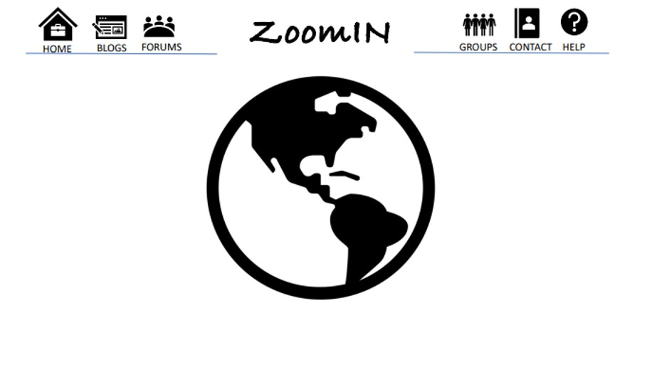
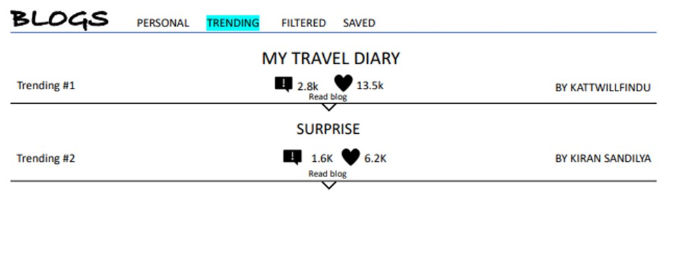
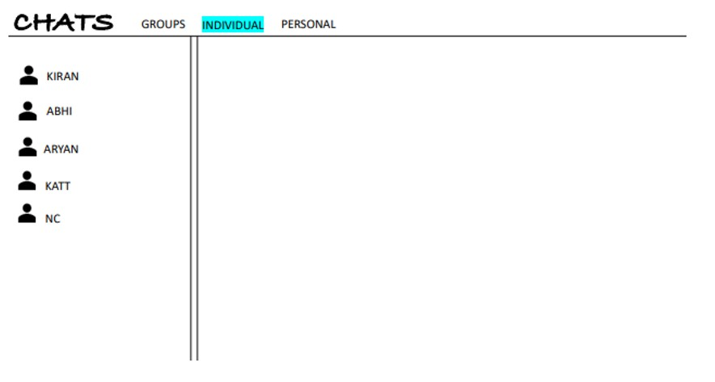
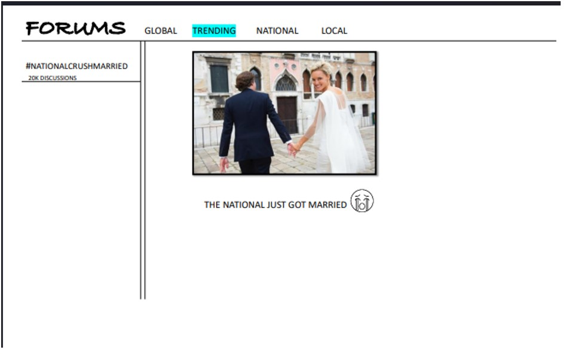

Our Brefing
ZoomIN
- ZoomIN offers a digital dive into the vast world of global cultures and destinations.
- We've designed a platform for an authentic, immersive experience, connecting you with a passionate global community.
- Background: Our app lets users discover and share captivating travel stories using an interactive map and blogging platform. By doing so, we hope to inspire connections and future adventures for travelers worldwide.
- Purpose: This user test aims to gauge the usability and functionality of our travel blog app prototype.
- Your insights are crucial in refining our interface design and enhancing the user experience.
Features at a Glance:
- 1. Virtual Globe: Navigate and uncover stories from various regions.
- 2. Deep Cultural Insights: Navigate and uncover stories from various regions.
- 3. Blogging: Chronicle or delve into tales of adventures and local experiences.
- 4. Trending Stories: Stay updated with popular global narratives.
- 5. Real-time Interactions: Engage, discuss, and forge connections.
What to Expect
- You'll encounter several usage scenarios, guiding you through tasks like exploring map points, perusing blogs, crafting posts, and engaging with fellow users. As you navigate, please verbalize your thoughts, concerns, or questions. It's invaluable in understanding your expectations and pinpointing areas for refinement.
- Remember, this isn't about right or wrong actions but gauging the app's intuitiveness. Be candid with your feedback; it's instrumental in our app's evolution.
- Thank you for participating! Should any queries arise, don't hesitate to approach the moderator before commencing the test. Safe virtual travels!
Scenario Tasks:
Tasks
Task -1: Go to the home page and navigate yourself to the trending events happening around you.
Task -2: Go to the forums page and navigate to forms and like your favorite one.
Task -3: Comment on a post either a blog or forum.
Observations:
Task-1 Observation
- The user managed to navigate to the blogs but not sure how to find out the trending blogs, we have an idea the top blog is a trending blog but missed to convey the same to the user, hence we changed the layout with more filters.
Task-2 Observation
- In this task the user was very happy with the layout because it is pretty simple there is a forum with image, description and there is like and dislike option clearly visible, but we then realized that it can be improved more by replacing the entire description with a title of the forum and if user feels interested then dives into entire reading, this would give time for the user to surf more.
Task-3 Observation
- The user successfully managed to comment, and then suggested if it would be more useful to have personal interaction with the other users to know more or to ask questions. So, we decided to make a chat feature, which will also save the text conversation.
Prototype
Landing page

- We modified the landing page to be more attractive and simple, which is liked by the users and this looks more better than previous one.
Blogs

- Based on the user reviews, we modified the blog page into like this. This gives better view and also easy to use.
Chats

- This feature is now included which is not available in the first phase, this is one of the most intrested feature by the users, almost everyone liked this feature.
Forums

<
- We modified the older version of the forums to make it look cleaner and give better user experience.